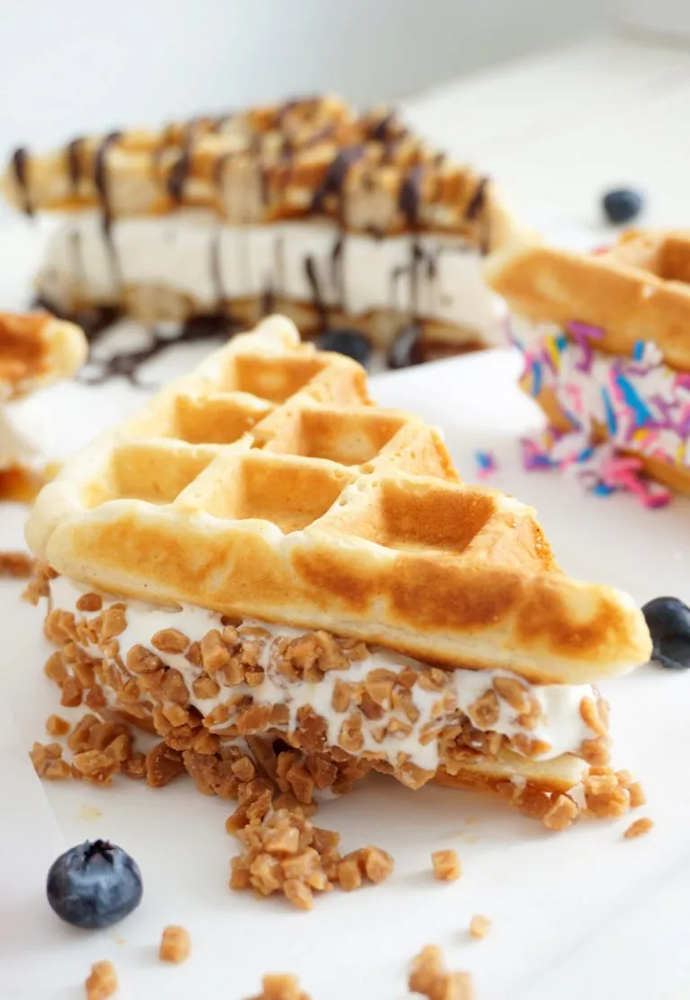

Waffle Ice Cream Sandwich Recipe

Something I loved getting at the fair was a waffle ice cream sandwich.
If you wanna make it well look below!
Source
Ingredients
- 2 cups all-purpose flour
- 2 tablespoons white sugar
- 3 teaspoons baking powder
- 1/4 teaspoon salt (or cinnamon)
- 2 large eggs
- 2 cups full milk
- 1/2 cup vegetable oil (or butter)
- 1/2 teaspoon pure vanilla extract
- 1 tub vanilla ice cream
- Any topping you'd like!
Instructions
- Preheat waffle iron.
- In a large bowl mix dry ingredients; flour, sugar, baking powder,
and salt.
- In a separate bowl whisk eggs until fluffy. Add milk,
vegetable oil, and vanilla. Mix to combine.
- Add wet ingredients to dry. Gently mix your batter just until
combined.
- Pour mixture into each section of your waffle iron. Cook until
golden brown (if needed spray waffle iron with non-stick cooking
spray).
- Set waffles aside to cool.
- Take a large tub of ice cream and dump the entire contents out in
one solid piece. Slice 1-inch thick rounds. Using your waffle as
a stencil cut ice cream into desired shapes to fit your waffles.
I did triangles. Sandwich the ice cream between 2 waffles.
- Press the sides of your waffle sandwich (where the ice-cream is
showing) into your desired topping, such as nuts, chocolate chips
or fruit.
- Eat right away, or wrap and freeze for later.